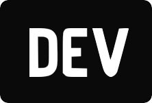

Por trás do código

Conheça a história do MAXML e quem está pilotando os bastidores deste projeto.
Quem é Henrique Máximo?
Sou um desenvolvedor focado no ecossistema JavaScript e TypeScript, com forte inclinação para soluções robustas de backend e arquitetura de software limpa.
O MAXML nasceu da necessidade real de criar um "caderno de laboratório". Acredito que a melhor forma de consolidar conceitos complexos — como SOLID, Clean Architecture, TDD ou gerenciamento de estado — é tentando explicá-los de forma simples e direta.
Atualmente, divido meu tempo construindo aplicações focadas em resolver problemas do mundo real (como sistemas financeiros e de gestão) e desbravando novos desafios técnicos a cada linha de código.
Filosofia de Trabalho
Código legível, testes automatizados e café sem açúcar. Prefiro entender os fundamentos profundamente antes de pular para o próximo framework da moda. Este blog é o reflexo dessa busca constante pela evolução técnica.